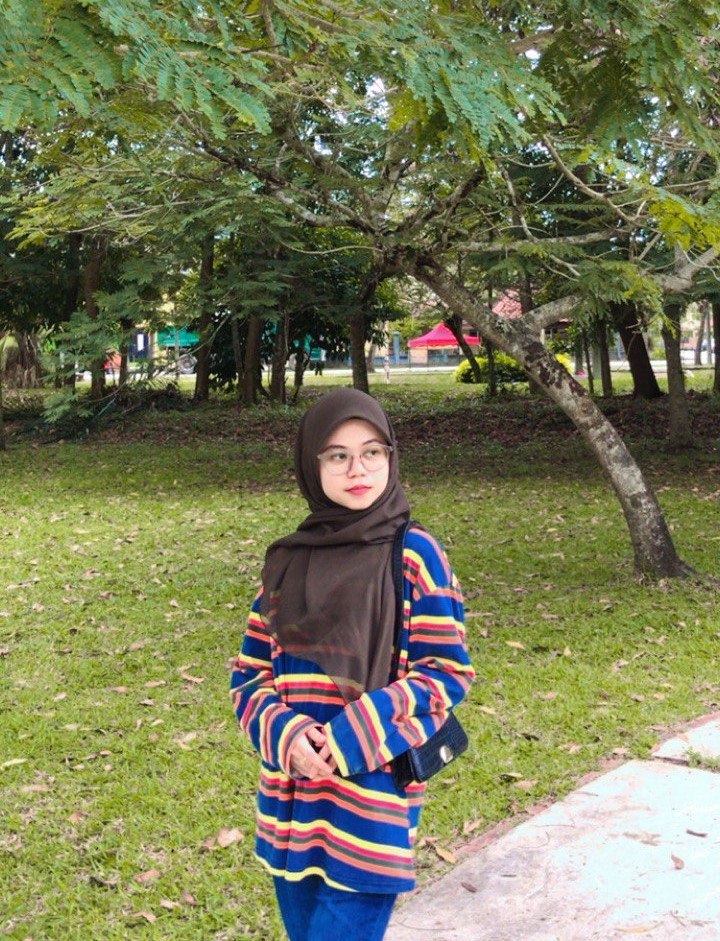

17:56:00
LET'S GET TO KNOW ME!

Hai my name is Fatin Syafiqah binti Abdul Karim. I was born on 31 August 2002 in Kuala Terengganu, Terengganu and I currently live in Kemaman, Terengganu. I am 21 years old this year. I am currently pursue my study in diploma of Information Management at UiTM Machang, Kelantan. I have 3 other siblings and I am the olderst amoung my siblings. I have two little brothers and one little sister.
SELF NOTE
I am human. I am real in the world. I am not an illusion in nirvana. I will use the word 'I' which means I am YOU. I am a human being who has been given a destiny that suits me. I realized that in my body it's not just me, there are many things that God has prepared in my body. I am in the form of soul, spirit and everything unseen. I will be of no use to anyone if I do not know myself. I will not be useful to anyone if I am not useful to myself. Some advice for myself is "make peace with yourself. build a good relationship with yourself and your heart. believe that you are greater than what you think."